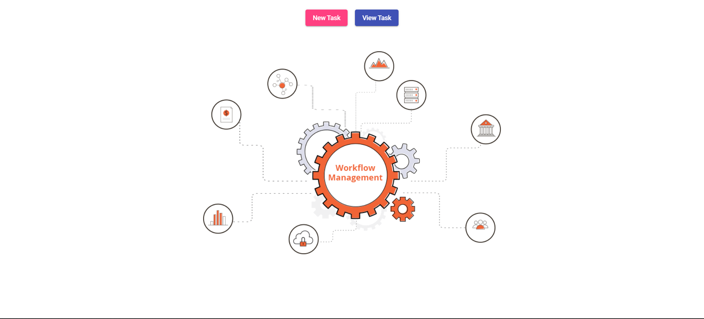

What is WorkFlow?
A WorkFlow is the process of how you get stuff done. It’s a system that
makes work more efficient while keeping everyone on the same page.
Workflow management is all about building and tracking these processes.
WorkFlow is like a home base for all your workflows: use it as a tool to
create workflows and track your team’s work.
Design
View, summarize, and update your tasks in-progress work to
make data-driven management decisions and prevent work delays.
Using WorkFlow as your WorkFlow Management Software
